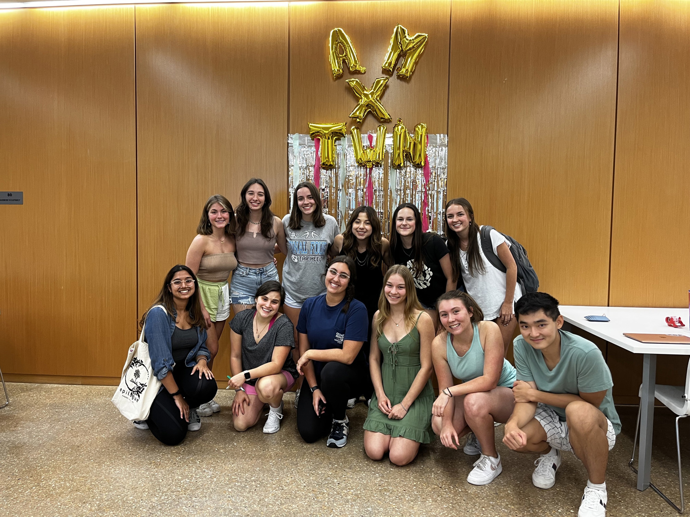

Active Minds at Carolina is the UNC-Chapel Hill chapter of Active Minds. Their projects increase students’ awareness of mental health conditions, provide information and resources regarding mental health and mental illness, encourage students to have conversations regarding their mental health, and serve as a liaison between students and the mental health community.

Contact UNC
919-262-2211
unc@unc.com